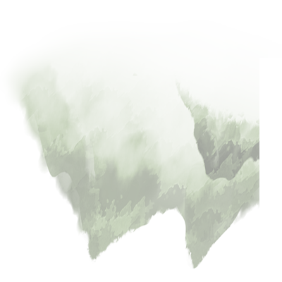
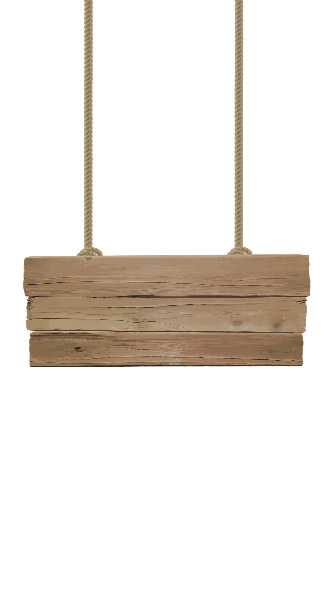

05:00
05:00

- Велосипед
- Ящірка
- Риба
- Компас
- Мирон
- Гриб
- Шишка
- Лелека
- Гори
- Коробка

. Хрущ (ящірка).
Під час мандрів Франко дуже цікавився природою, особливо рослинним і тваринним світом. Ще в час навчання в Дрогобицькій гімназії він разом зі своїми вчителями Емериком Турчинським та Іваном Верхратським радо їздив на екскурсії, де ловив хрущів та лиликів (кажанів), збирав гадюк та вужів для зоологічної колекції проф. Верхратського. До речі, в Музеї Франка у Львові збереглися скляні посудини з різними заспиртованими тваринками (комахами, плазунами та земноводними), що їх препарував сам Іван Франко!